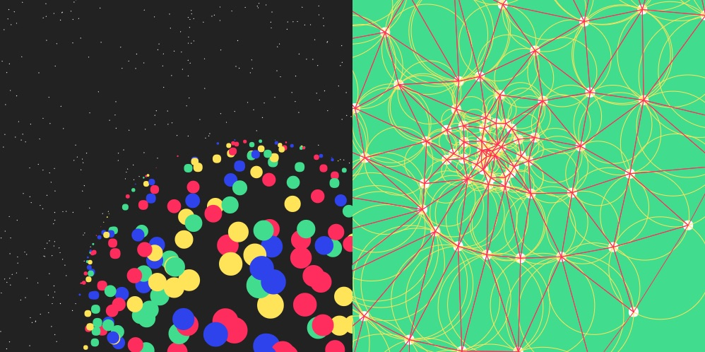

Pts is a new library that enables you to compose and visualize points. It revisited the ideas introduced in Pt (an experiment library released 2 years ago), and updated its code and structure from the bottom up.

Pts is about connecting the dots, like seeing the Big Dipper when we look at a sky full of stars. In Pts, a point represents the basic building block, the smallest idea in the vastness of a conceptual space. Its goal is to let you experiment and express what you see in your mind's eyes — points as shapes, colors, motions, interactions, sounds, and more.
Pts is written in typescript and compiled to javascript. It's lightweight and structured so that you may easily incorporate all or part of it into your own projects.
Now let's get started! Take a look at the demos, and read the guides.